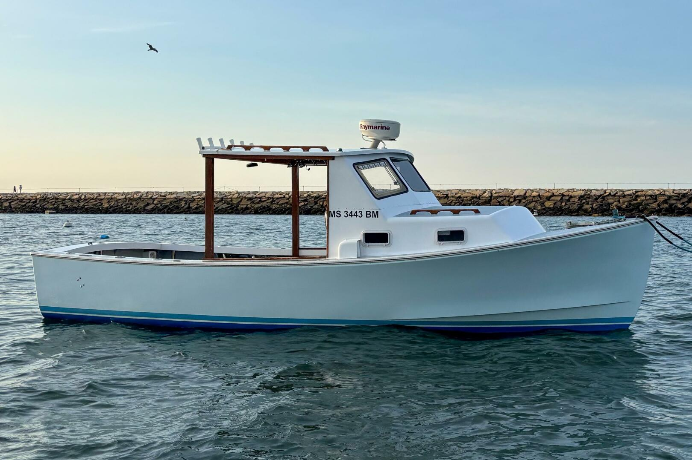

B-Atlas Boat Guide · SISU-26-BA
Sisu 26 Bass Boat / Sedan / Lobsterboat
1979–1995
The Sisu 26 is a Downeast/lobster-boat-derived hull whose individual finish and propulsion can vary significantly. B-Atlas treats the hull identity as useful, but not every legacy accommodation, tankage or equipment value as a factory-wide standard.

- Length
- 25.92 ft
- Beam
- 9.67 ft
- Draft
- 2.75 ft
- Hull behaviour
- Semi-Displacement
- Fuel
- Diesel
- Propulsion
- Shaft
- Engine configuration
- Single inboard or outboard depending hull and conversion
- Boat family
- Downeast
- Construction
- Fiberglass
Best for
- Experienced buyers seeking a genuine lobster-boat-style hull
- Coastal cruisers who prioritize seakeeping and cockpit utility
- Owners comfortable verifying hull-specific equipment
Trade-offs
- Semi-custom and custom finishes create large hull-to-hull differences
- Model-wide accommodation and tankage data are not consistently standardized
- Older examples may have extensive owner modifications
Known concerns
- No model-specific concern has been promoted to B-Atlas’s evidence threshold. This does not mean the model has no age-, condition- or hull-specific risks.
Inspection focus
- Confirm hull builder, finisher, year and HIN
- Inspect structural additions, deckhouse and bulkhead workmanship
- Inspect engine installation, exhaust, cooling and shaft/outboard conversion
- Verify tankage, wiring and plumbing installations
- Verify actual dimensions, displacement and accommodations
Continue researching
Related boat models
Sisu 22 Bass Boat / Lobsterboat
22 ft · Semi-Displacement
Atlantic Boat 26 Downeast / Lobsterboat Hull
26 ft · Semi-Displacement
Back Cove 26 Downeast Cruiser
26.5 ft · Semi-Displacement
Rosborough 246 Yarmouth
25 ft · Semi-Displacement
Rosborough RF-246 Custom Wheelhouse
25 ft · Semi-Displacement
Fortier 26 Bass Boat / Downeast Cruiser
26.9 ft · Semi-Displacement
About this record
B-Atlas preserves uncertainty: missing information remains unknown rather than being treated as a negative. Specifications and guidance describe the model record; individual boats can differ by year, equipment, refit and condition.